Took off for one day, I was so fully “charged”, like the Chinese said, “I started the wind when I am on the move”.
Yes, that was how good I felt about myself today.
During those days in China, I got to take my time off every couple of days.
But in Kazakhstan, I finally could take one day off after biking for more than 20 days.
However, I didn’t bike as long distance everyday here as I did in China,
so I guessed I was not that tired- unless I couldn’t get a good night sleep.
I didn’t want to pay too much for breakfast, so I usually made a 700cc hot coffee using my own water bottle,
and drank that with 10 loaves of bread. Everything together was under 100 tengs.
Eating the breakfast and packing at the same time,
I thought I should be able to reach the border by today, and I wondered what that would look like.
I was guessing, many trucks waiting in line? Probably not.
Because the border here opens 24 hours a day, the line can’t be too long.
I did hope, though, that I could find a little town there. A little town with restaurant, stores and hotels.
Because I would have to stay there for one more day until my visa became effective,
I would be really doomed if there was nothing nearby the border.
The worst scenario would be to camp around the border for two nights.
So, maybe, maybe the safe way was to stay here one more night, and then biked to the border tomorrow.
But, it was no use to think too much at this point. I decided to check it out myself.
Different from yesterday, which was a rainy day, the sky today was clear and blue.
But my watch said the opposite, so I’d better just get on the road now.
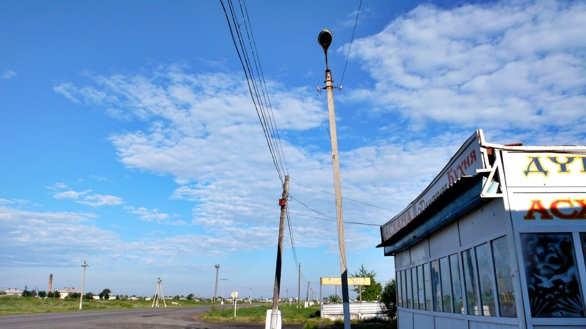
It was not very straightforward to get to the border; I had to be extra careful to avoid getting lost.
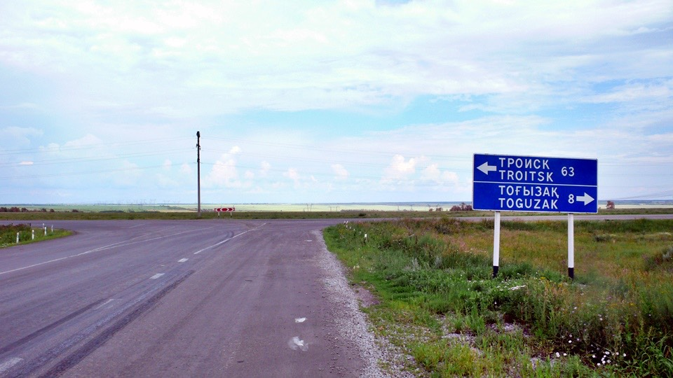
The dark clouds started to gather around, and thunder was approaching, I guessed my watch was right.
I considered myself lucky since I could see a town that was not too far away.
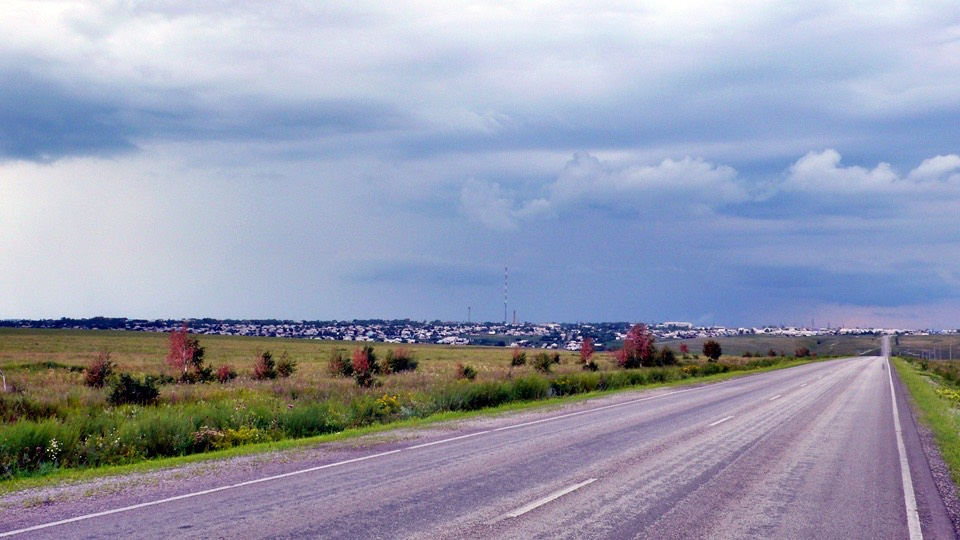
I biked really fast and hoped I could keep myself dry this time.
Unfortunately, the rain started pouring and I was merely 500 meters away from a gas station. So I was still wet, half-wet.

Finally I was at the gas station; I saw it was raining and sunny at the same time.
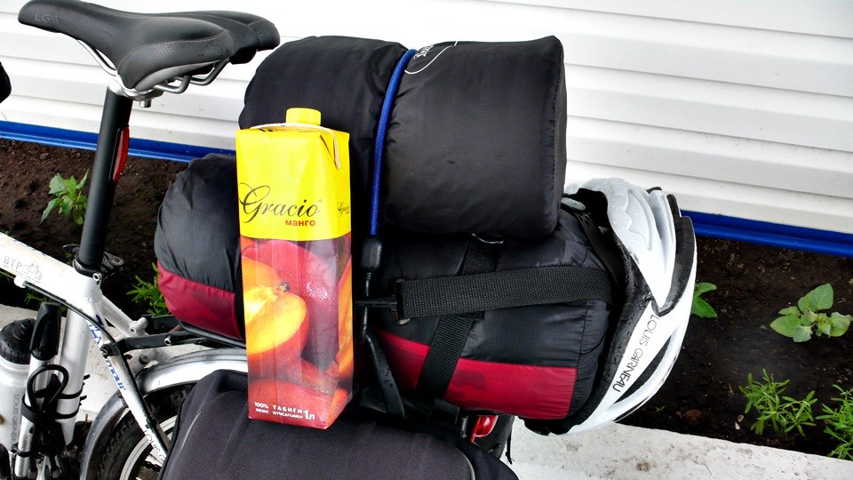
I knew people said that the weather is unpredictable, but it was really too wild to me this time.
I got myself a carton of mango juice while waiting for the rain to stop.
I looked around and thought this town was probably a bigger one in Kazakhstan. It should be fun to pay a visit later.
Stuff sold here was not good at all; I planned to get something yummy in that town.
People didn’t get into this gas station in time when the rain started pouring were all soaking wet.
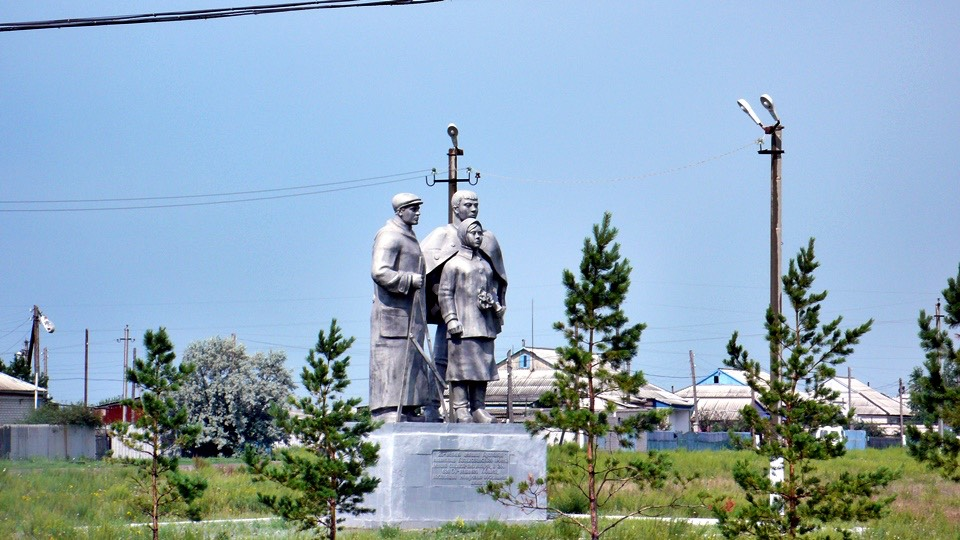
Bread is pretty cheap in Kazakhstan. You need to pay BILLs for crackers or candy,
but for bread? A couple of coins can get you plenty.
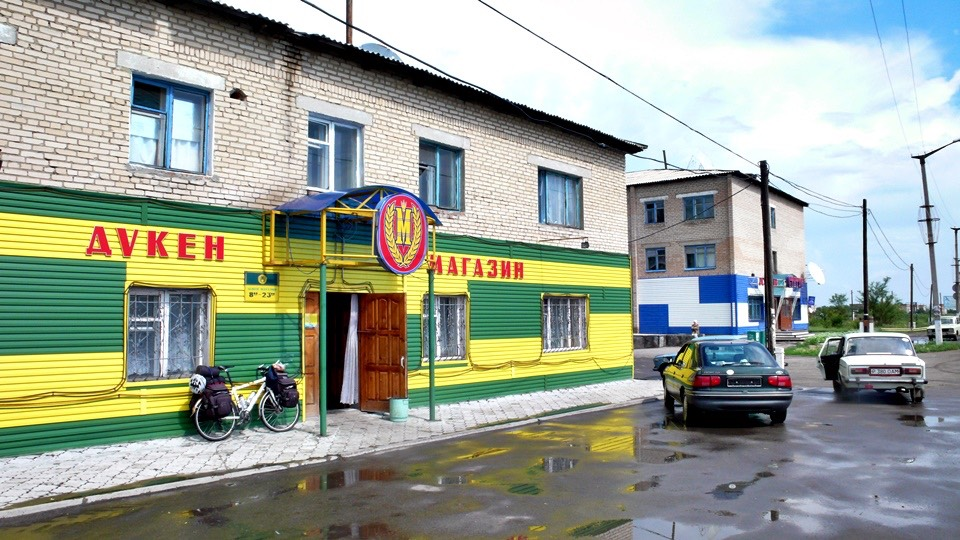
I just paid less than 50 tengs for 5 of the palm-size bread, and I used the change to buy myself two ice creams.
One hundred tengs certainly can bring lots happiness.
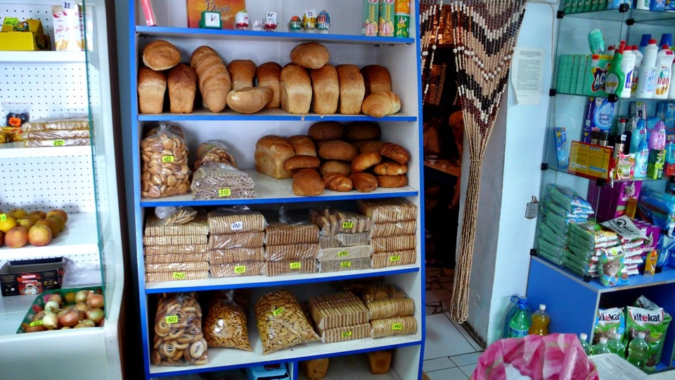
Even though the rain had stopped, I was pretty convinced that it could come back anytime.
I needed to get on the move as soon as possible, so I was biking and eating my bread at the same time.
Just as I expected, the rain started again just as soon as I finished the bread.
The difference was, I had nowhere to hide this time. I put on my hat, and that was the only spot was not soaking wet during the rain.
According to MY observation, I just needed to bike fast for a little while-like 10 km while, I could be out of the raining “zone”.
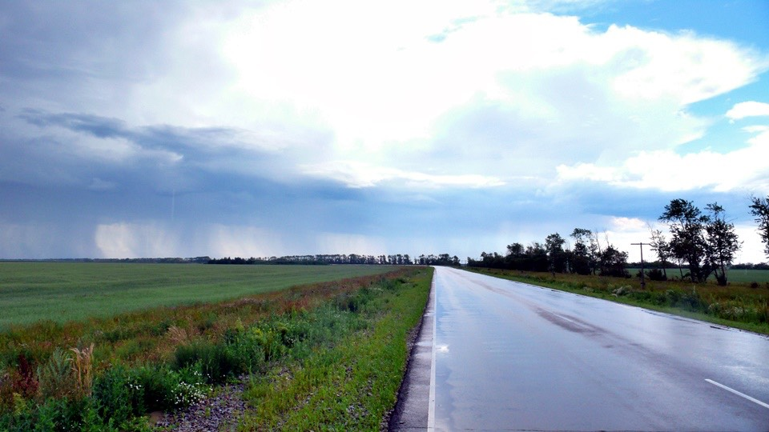
This was the first time that I felt so confident about my own “weather forecast”.
I biked for a while and I really left the cloud behind.
Looking at the bright sky, I was feeling great, too. Even the road ahead was dry, which made me happy.
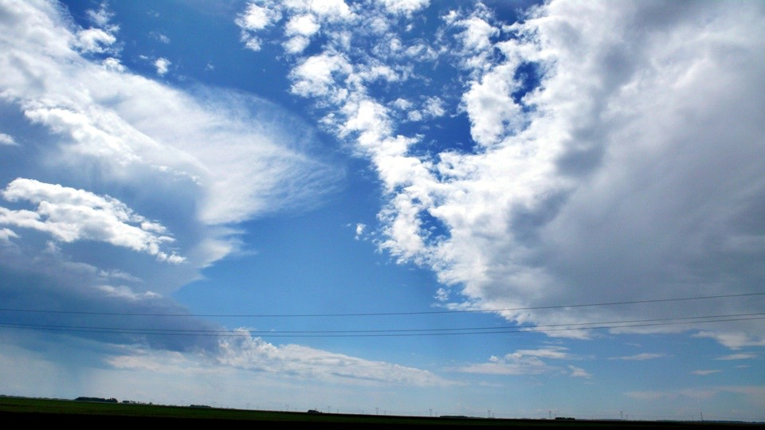
The sun came out eventually, it dried me inside out. I should thank god to do my laundry for free.
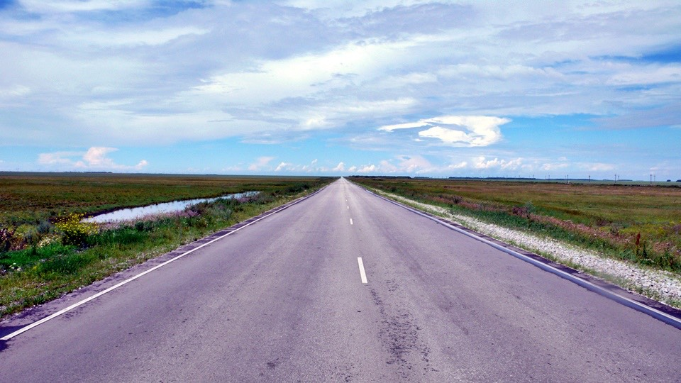
The border was not far away now;
I guessed I would be saying goodbye to Kazakhstan, as well as its crazy weather very soon.
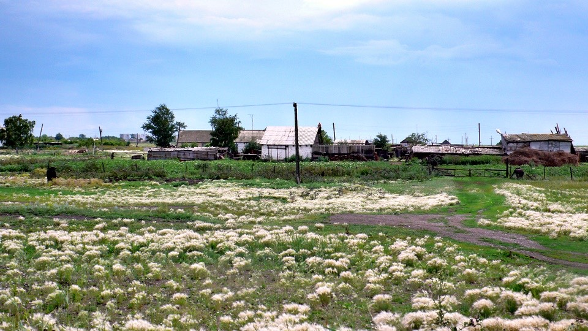
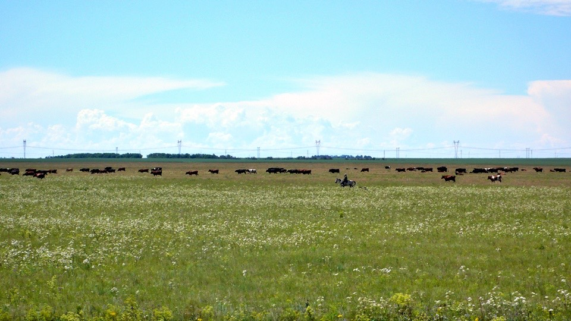
The sign of Chelyabinsk city led me all the way to the border.
However, it is a city of Russia, not Kazakhstan.
This city had factories with red-and-white striped chimneys, which blow out the major air pollution.
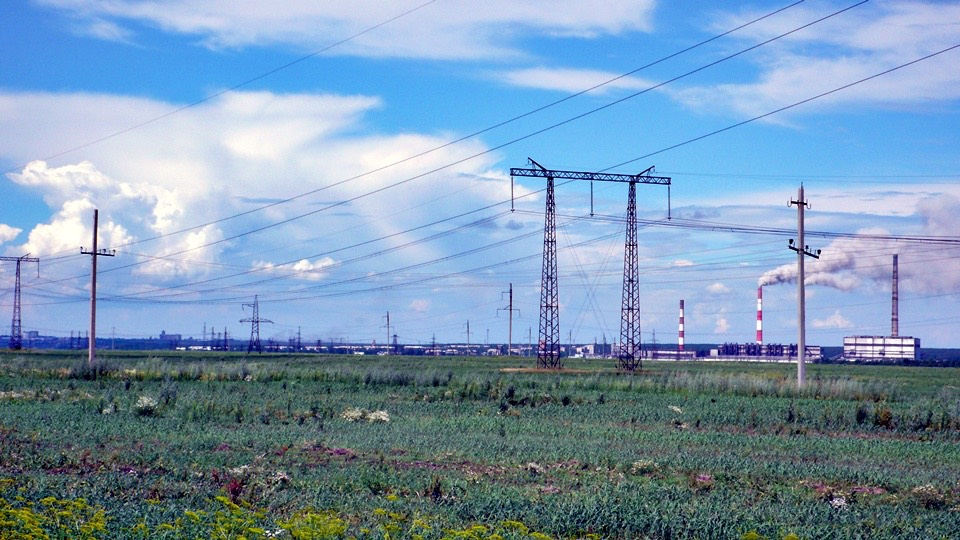
I arrived at the border at around 3 o’clock in the afternoon. I did see cars, not trucks, waiting in line.
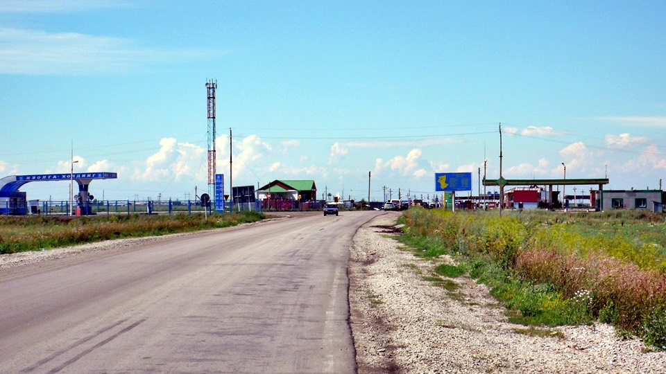
The Russia-Kazakhstan border allowed car to pass much easier, meaning the car could just DRIVE through the border.
This also made my life easier with Dido.
Not like when I was at the China-Kazakhstan border,
where I went through lot of trouble to take the shuttle bus from one place to another.
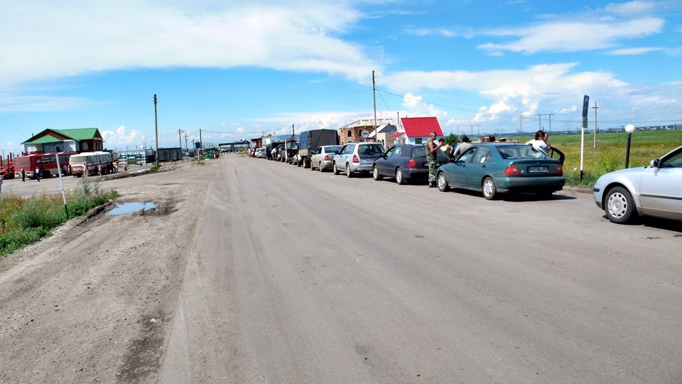
Even though I hadn’t officially entered Russia, my cell phone already found the Russian wireless signal.
There was no town at this side of the border, but the big city was clearly out there on the other side.
Other than two gas stations, there were a building for people work at the custom to live, a grocery store,
and a hotel, but these totally fulfilled my needs at this point.
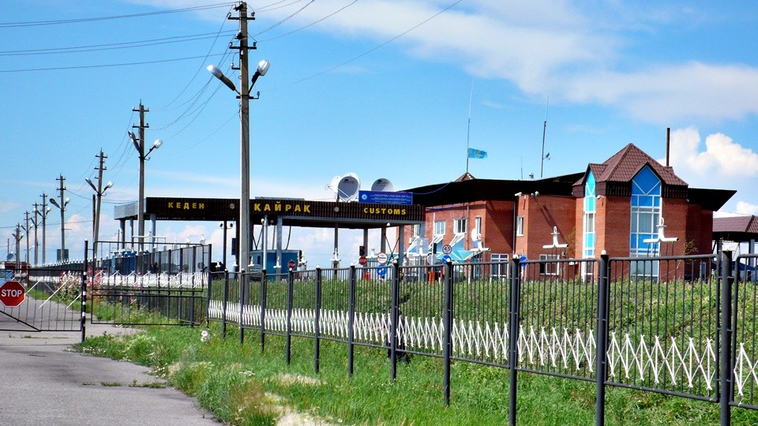
I definitely didn’t’ need to camp for two days.
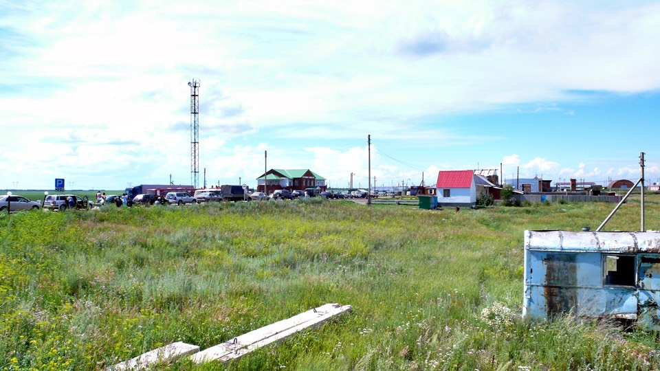
Ignoring the cars waiting in line,
I went up to the custom to ask if I could enter Russia today (of course the answer was NO, I was just too bored).
Exactly as what I expected, the custom people looked at me, looked at my passport,
and pointed at the date, he asked me to wait until Jul 21.
As a matter of fact, I was pretty tired after biking in the rain.
I really would like to sleep in a comfortable bed for a change. So Dido and I decided to ask for the rate of that nice-looking hotel.
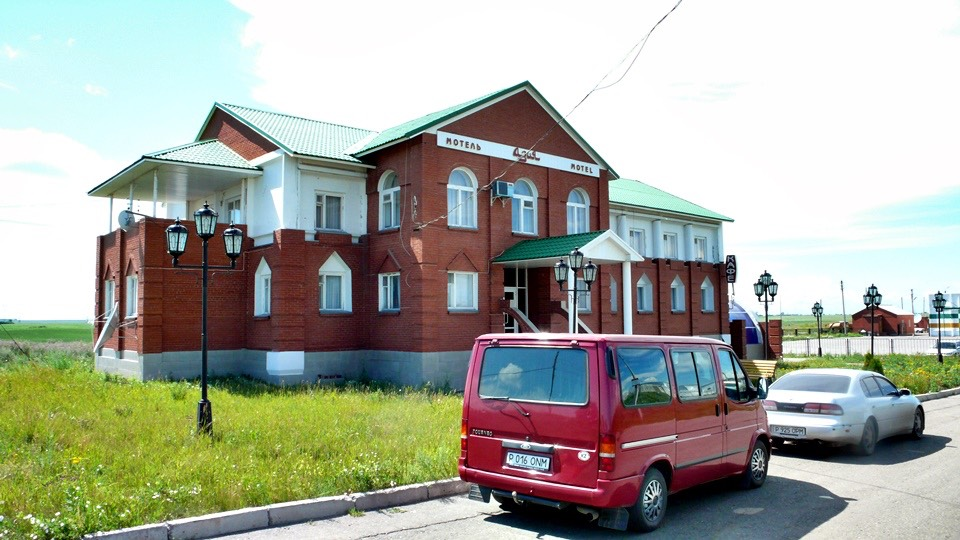
Probably because I had expected it would be really expensive, I didn’t feel too bad when they told me it was 2000 tends per night.
However, just like yesterday, there was no internet or entertainment in this hotel. All I could do was “relax”.
I took a hot shower and walked to the restaurant at the gas station for dinner.
The car line to the border was still very long and moving slowly, but it WAS moving at least.
There were not many items on the menu at this restaurant,
so I ordered the meat-stuffed peppers with bread and milk tea.
It actually tasted pretty good, especially the meat stuffing was mixed with rice, made the whole thing tender and juicy.
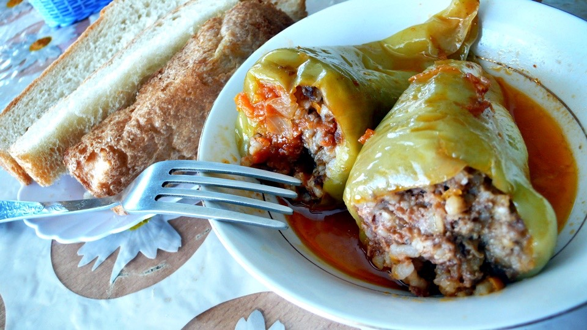
I bought two cartons of juice on the way back to the hotel.
I had way too much soda these days, kind of disgusting.
I didn’t have much vegetable after entering this country, but luckily I had loose bowel movement way too often in Kazakhstan.
I guessed that solved my potential constipation problem.
So, here was my solution of lacking vegetable, with more juice.
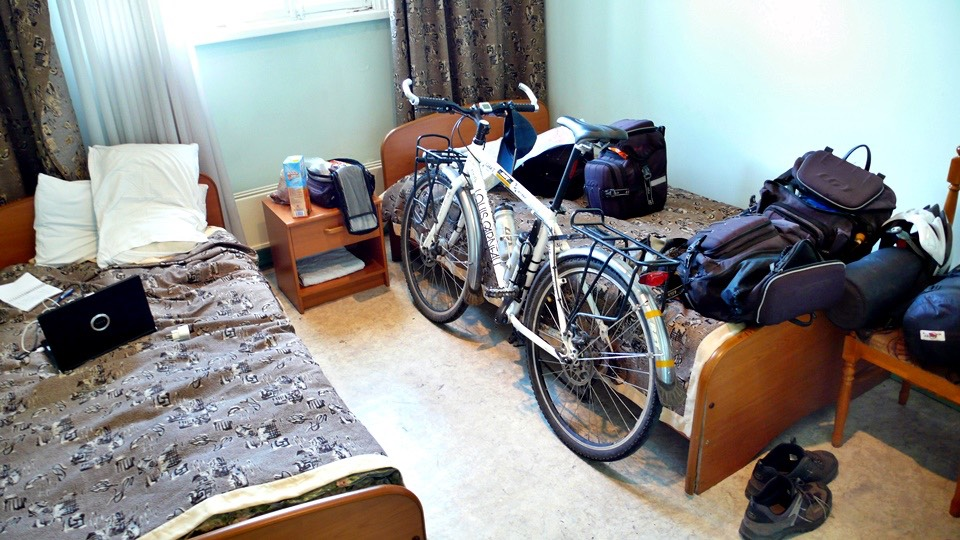
I was going to take one day off tomorrow. I would try my luck 5 o’clock on the Sat morning, to see if I could enter Russia then.